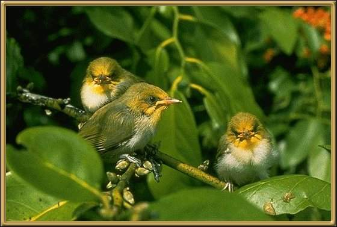

Pairs mate for life and drop out of the flock to breed, rejoining the flock later. We have a lot of silvereyes in our garden, although the ones here in Summer are a more southern species and have pale orange on their breasts. 12.5cm (5 inches).
Photographer: unknown